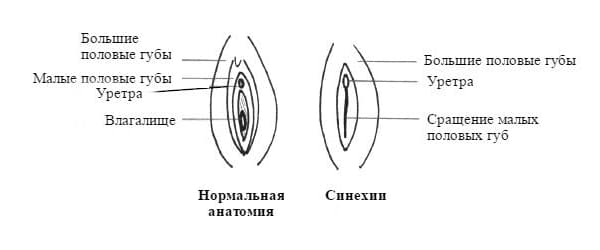

Вы принесли свою 4-месячную дочку на плановый осмотр, и вы счастливы, что она полностью здорова. Когда врач проводит обследование с ног до головы и осматривает влагалище, он сообщает вам: «Ее влагалище закрыто». Эта распространенная и безобидная особенность называется слипание (синехии) половых губ.
ПРИЧИНЫ
Оставшийся в организме новорожденной девочки гормон матери эстроген в ранние месяцы жизни сохраняет слизистую половых губ гладкой. К 3—4 месяцам происходят два изменения, которые провоцируют слипание половых губ: действие материнского эстрогена пропадает и постоянное раздражение половых губ из-за натирания влажными подгузниками вызывает воспаление. Воспаленная ткань, подобно царапинам и порезам, срастается.
ЧТО ДЕЛАТЬ
Если область половых губ закрыта не настолько, чтобы затруднять мочеиспускание — что происходит редко — синехии безобидны. В большинстве случаев ребенок начинает исследовать свое влагалище и постепенно и безболезненно разделяет это слипание. Половые губы, которые остаются слипшимися в детском возрасте (между половыми губами образуется своеобразная мембрана), как правило, разделяются в период полового созревания, когда собственные женские гормоны девочки приводят к созреванию половых губ. Тем не менее иногда половые губы остаются плотно слипшимися и не разделяются сами по себе. Если между ними почти нет отверстия, вагинальные и менструальные выделения не могут вытекать. В таких случаях гинеколог должен провести процедуру разделения в больнице. Но лучше всего предотвращать слипание половых губ или аккуратно разделять слипания, когда оно только появляется в младенчестве, если есть такая возможность.
В зависимости от того, на что похожи синехии, ваш врач выберет один из следующих подходов: если мембрана тонкая и прозрачная и только частично прилипает к половым губам, ваш врач, скорее всего, просто будет следить за развитием синехии при каждом плановом осмотре. Большинство педиатров предпочитают этот подход, поскольку обычно синехии проходят без применения лекарств или ручных манипуляций.

Если мембрана тонкая, врач может взять крошечный инструмент, наподобие того, который используется для удаления ушной серы, и аккуратно и безболезненно проведет линию вниз посередине мембраны, открывая ее. Это может быть хорошим способом, поскольку, если со слипанием ничего не делать, оно может утолщаться и в дальнейшем придется прибегать к более сложной процедуре. С другой стороны, если синехии разъединены, воспаление может усилиться, и половые губы могут срастись снова.
Третий способ, к которому можно прибегнуть, если половые губы более плотно слиплись и практически полностью сомкнулись, заключается в нанесении крема с эстрогенами (как описано ниже) для размягчения синехий. Затем ваш врач, возможно, сможет разделить их, используя описанный выше способ.
ЛЕЧЕНИЕ
План лечения не зависит от толщины мембраны и от давности синехии. Вот что мы рекомендуем делать в большинстве случаев слипания половых губ:
Следует периодически осматривать ребенка во время купания, и если вы замечаете, что начинают образовываться синехии, расскажите об этом своему врачу во время следующего планового визита.
Здоровье ребенка от докторов Сирс / Сирс У. и др.